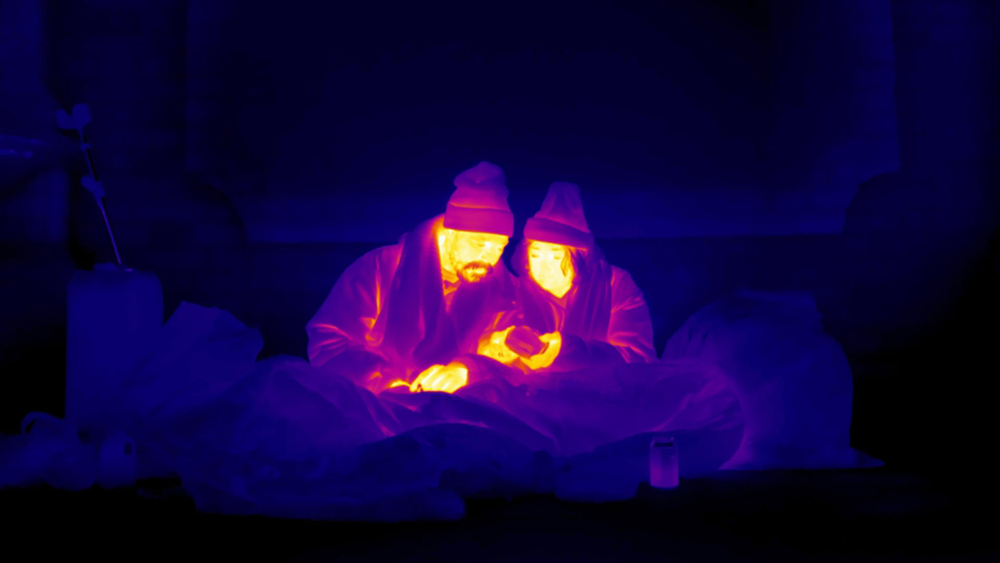

Hoe werkt de coronatest?
Ruben Mersch
6 min 150 194
Ik werkte als dokter voor daklozen en zag: alleen een huis maakt ze beter

Het Nationaal Groeifonds is de BV Nederland in een notendop: het bedrijfsleven bepaalt en het klimaat is bijzaak
Waarom we de Correspondent-app in-house (en vanuit huis) hebben gebouwd